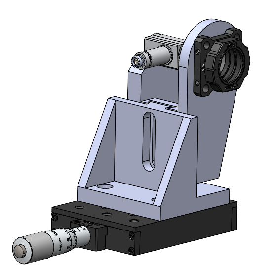

The microscope
Fluorescence microscopy is a commonly used technique for analyzing biological samples and molecules and includes some different methods of measurement. Two often used techniques are the total internal reflection fluorescence microscopy (tirfm) and the confocal microscopy. So it is useful to build up a microscope setup which combines these two methods in a space-saving design.
The main advantages of this setup are
- combination of tirf and confocal microscopy
- easy switchable between both with just a few handles
- space saving design
- cost-effective setup
- additionally applications possible like singlemolecule fret-measurements
The design of this microscope setup is based on the micube of Hohlbein et al. We took their concept and optimized it for our application.
The pictures below show the main assembly of the microscope. The cube is the center of the hole microscope and connects the the excitation and detection beampath. A dichroic mirror inside the cube directs the excitation beam to the objective on the top of the cube and the detection beam to the tube lens which is mounted in the attached lensmount.
The collimator holder consists of an reflective collimator and a removeable lens which are both attached on a home-build holder and mounted on a translation stage.
The sample holder positions the sample with his arm over the objective and has a magnetic and removeable inlay. A motorized translation stage allows for precice positioning of the sample in z-direction. For lateral movement the assembly is based on a manual two-axis translation stage.
2 / 3

collimator holder
❮
❯
Microscope components
The microscope consists of commercial and home-build components. We tried to build as much as possible by our own to reduce costs, so lots of parts were 3d-printed or built of aluminium. All other parts such as optics and optomechanics were purchased or were already available. A complete list of all used parts together with STL files for the home-build parts can be found here.
Notice: Some parts such as objective and camera are very important for a good image so you should take care for a good quality of these components.